| 日付 | 2017年11月26日（日） |
|---|---|
| 山域 | 奥多摩 |
| メンバー | グループ（男2女4子供5） |
| 山行形態 | 子連れ日帰り |
| アクセス | 電車、バス、ケーブルカー |
| ルート (Map) | 御岳山駅 (10:26) - (11:34) 日の出山 (12:42) - (13:40) 車道 - (14:09) つるつる温泉 |
山友達数名と久しぶりに山に行くことにする。
みんな家族を持ち子連れ登山になっている。
今回は大人6名子供5名の大人数登山だ。
行先は歩く距離が少なくて済むよう、
ケーブルカーを使った日の出山登山とする。
自身が行ったことのない山というのが少々リスキーだが、
簡単そうな山だし、全員「山友達」なので大丈夫だろう。
御嶽駅を降りてバス停を見てびっくり。大勢の観光客が列をなしている。
ケーブルカーに乗るのは3回目だが、こんな混雑は初めてだ。
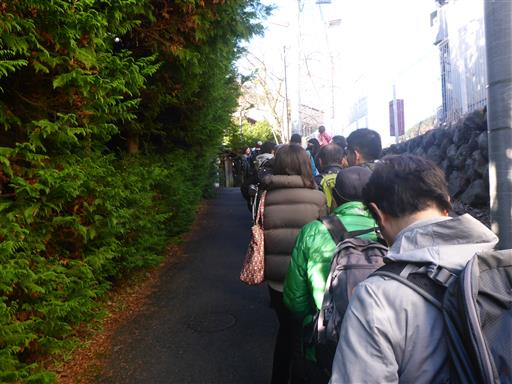
臨時便のバスに乗りケーブル下バス停に到着。側にたき火があって息子は興味津々だ。
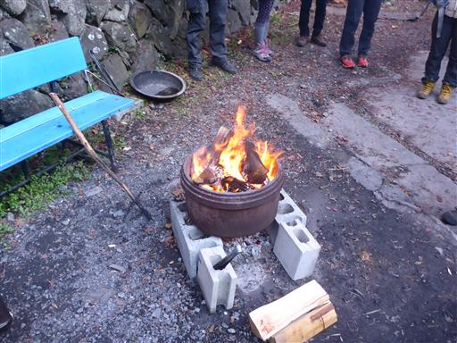
登山者はバス停からケーブルカー乗り場まで列をなして歩いていく。
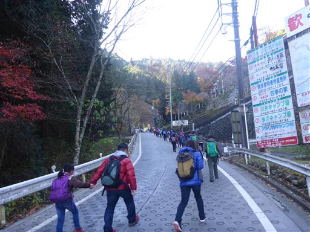
ケーブルカー乗り場で再び列に並ぶ。車で来た観光客も合流して大混雑。
初っ端から想定外の事態だ。
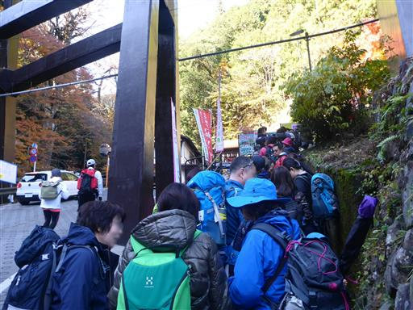
ようやくケーブルカー乗り場に移動。
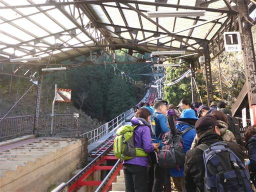
子供たちは並んでケーブルカーが来るのを待っている。
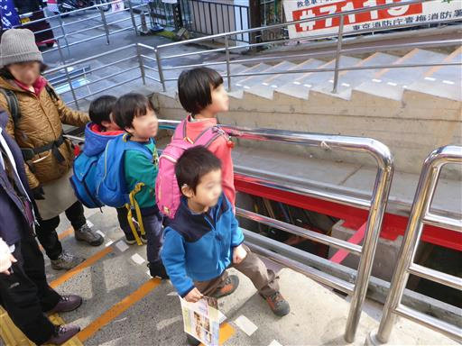
混雑するケーブルカーに乗車し出発。眼下の紅葉がきれいだ。
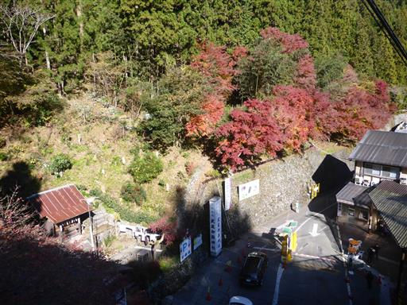
御岳山駅に到着。
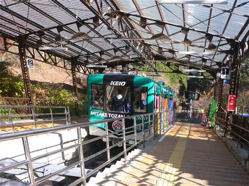
駅を出て登山の準備をする。標高830m。
登山開始が予定より遅れたが、バスもケーブルカーも臨時便を出してくれて大いに助かった。
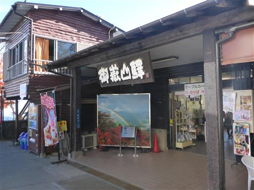
準備を整えたら登山開始。
一番年下の息子は、ケーブルカーでの場所取り競争も、歩き始めの先行競争でも負けて不機嫌だ。
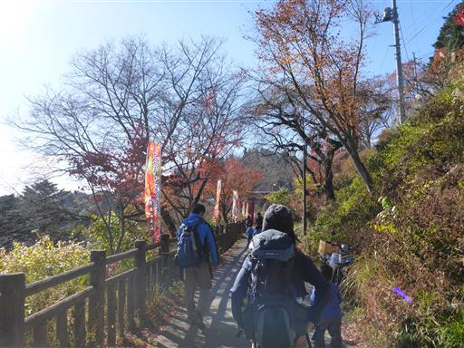
ちょうど紅葉の季節で葉がきれいに色付いている。混雑の原因はこれだろう。
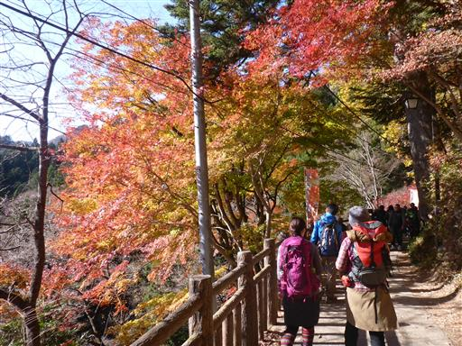
先週の山行に続き今週も見事な紅葉だ。
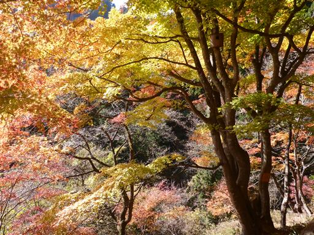
御岳山の山上集落を通り抜ける。
時間が押しているため、御岳山の山頂はスキップして直接日の出山を目指す。
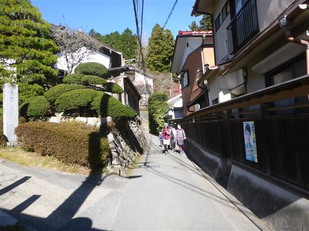
大根が干されている。
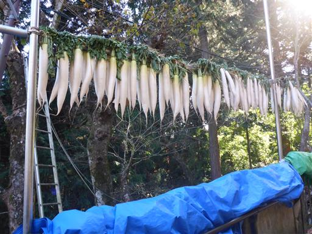
日の出山に向かう道に入っていくと、有難いことにだいぶ人影が少なくなる。
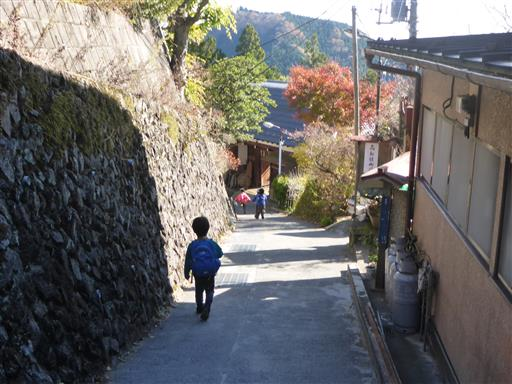
先行して歩く子供たち。小1・年長・年長・年中・年少の5人組だ。
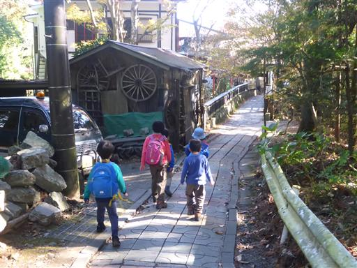
歩くこと30分ほどで、ようやく登山道らしくなってくる。
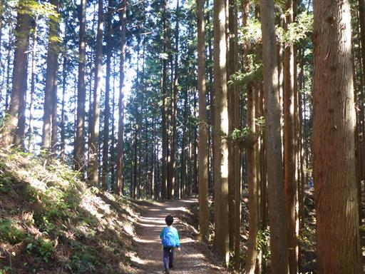
山道に入ると普段から山を歩いている3人が先行し、隊列が長く伸びる。
こういう場所は年齢よりも経験がものを言う。
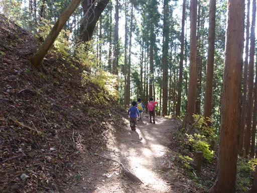
穴の開いた枯木。格好いい姿だ。
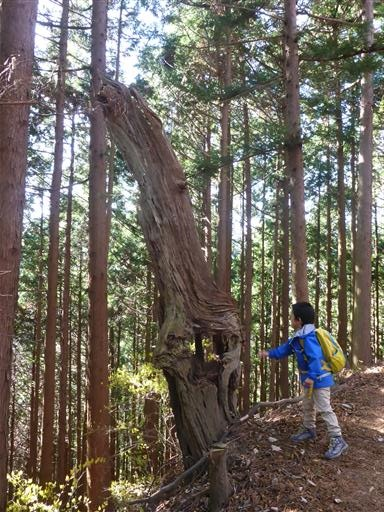
真新しい鳥居が立っている。ここで後続を待つ。
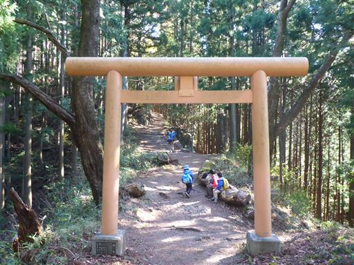
ここからは階段の登りが始まる。本日唯一の登りだ。
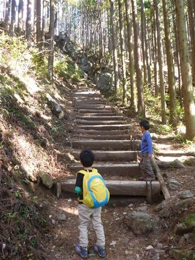
一登りで日の出山山頂に到着する。標高902m。
みんな頑張ったので良い時間に到着できた。
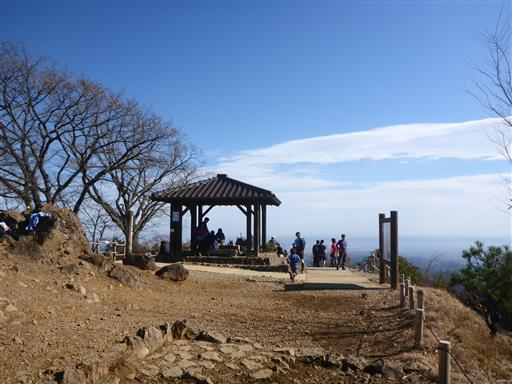
登頂成功のポーズ？
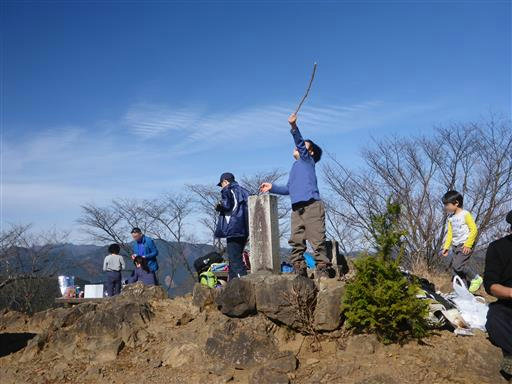
山頂からは素晴らしい展望が広がる。
見えているのは鷹ノ巣山など奥多摩の高峰たちだ。
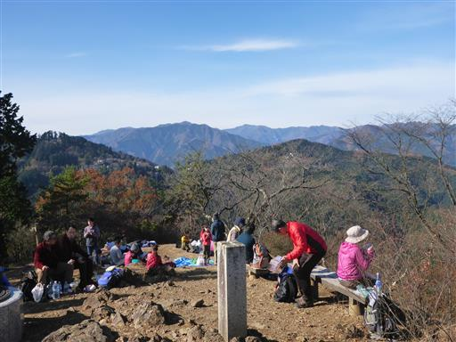
こちらは関東平野方面。山名のとおり日の出がきれいに見えそうだ。
雲の形も美しい。
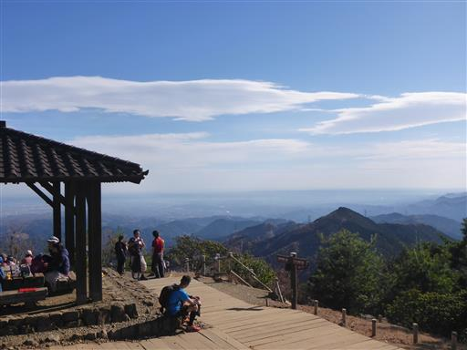
山頂で昼食やおやつを食べ、一通り遊んだら下山開始。
まずは山頂直下でトイレタイムだ。
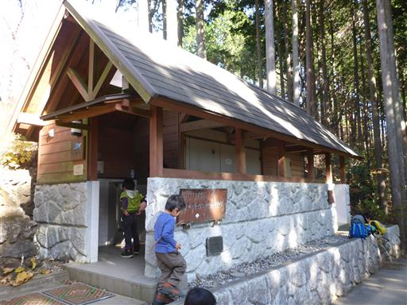
長い階段を慎重に下る。この辺りも紅葉がきれいだ。
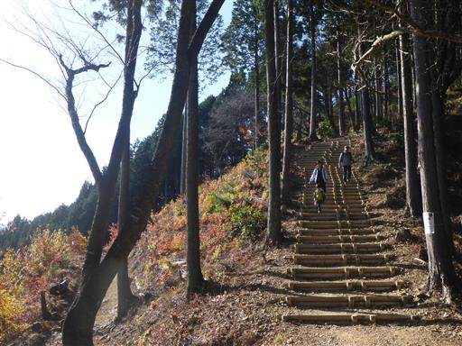
つるつる温泉に導く標識。
日の出山からの下山ルートとしては一番メジャーなルートだと思うが、
つるつる温泉を指す標識の数はなぜか少なめだ。

歩きやすい道を下っていく。
やはり隊列は伸びてしまうが、ところどころで後続を待つ。
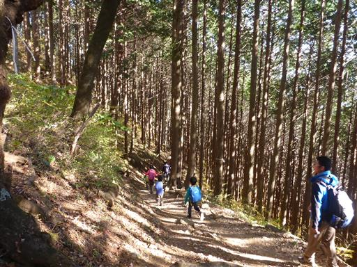
途中で木の伐採地があり展望が広がる。遠くビル群が霞んで見える。
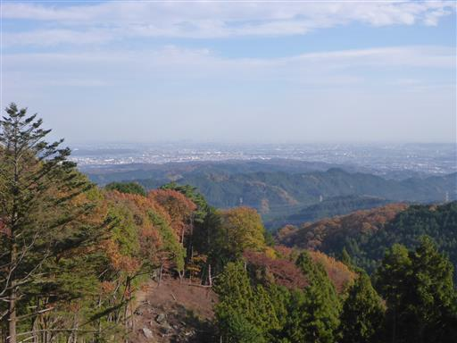
滑落がちょっと怖い尾根。
子供たちはすぐに先を争うので、ここでは追い越し禁止にする。
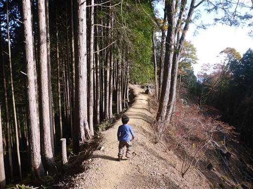
顎掛岩に到着。山でよく見る日本武尊の伝説が残る岩だ。
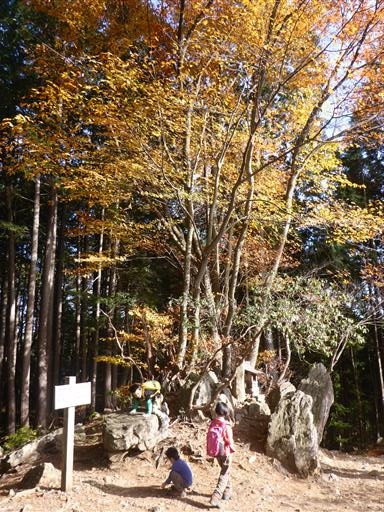
全員、無事車道まで下山してくる。
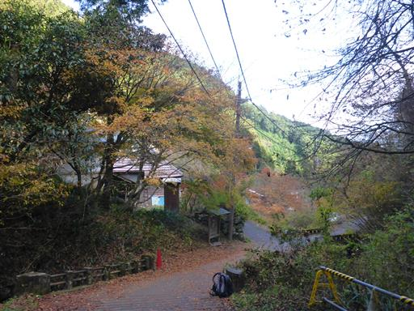
子供たちはしばしの間、沢遊び。
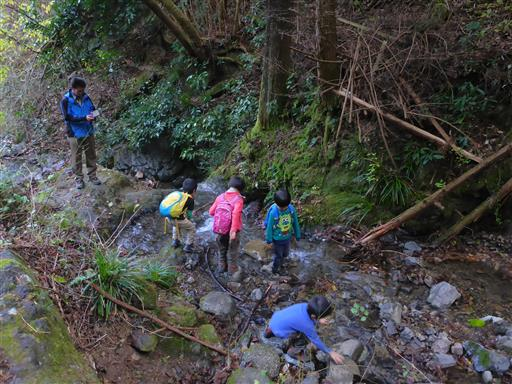
カエルのオブジェが乗った橋。他にもザリガニや魚などがあって面白い。
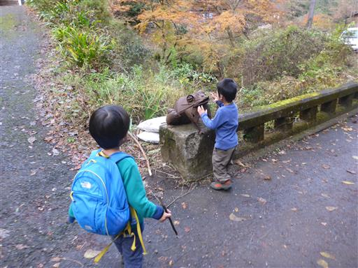
あとはつるつる温泉まで20分ほど車道をだらだらと歩いていく。
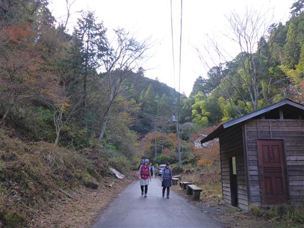
つるつる温泉に到着。標高370m。
さっぱりした後、立川に出て一部メンバーで2次会を行う。
今回の登山は、子供たちの歩く速度が思った以上に差がありペース配分に苦労した。
最終的には脱落者も出ず、全員がそこそこのタイムで歩き切ることができ、
皆に楽しんでもらえたようで良かった。
日の出山は非常に歩きやすい登山道で、山頂からは素晴らしい展望が広がり、
期待以上に良い山だった。
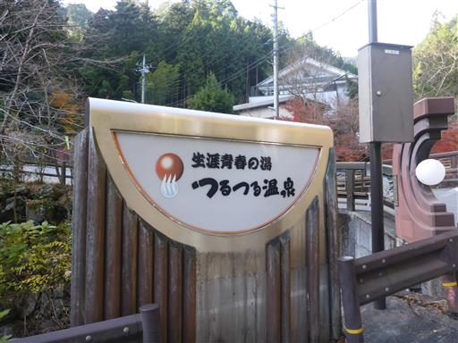